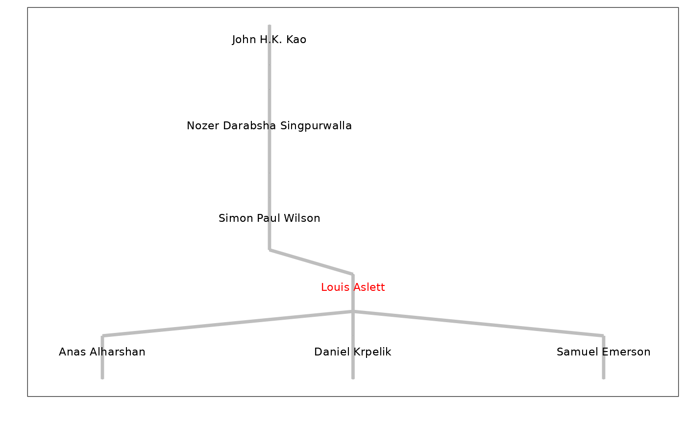

Plots a genealogical tree using the ggenealogy layout engine.
Arguments
- g
an object of class
genealogy, as returned byget_genealogy().- max_anc
an
integer(1)with the maximum number of generations of ancestors to be displayed.- max_des
an
integer(1)with the maximum number of generations of descendants to be displayed.- id
an
integer(1)orcharacter(1)with the mathematician ID to highlight and centre the tree on. By default this isNULLwhich will use the first ID that was supplied toget_genealogy()when retrieving the genealogical tree. Note that the ID must be one of the IDs searched when callingget_genealogy()to constructg, since the search for ancestors/descendants only goes directly up/down branches reachable from the initial search ID.- col
a
character(1)specifying the colour to highlight the mathematician one whom the graph is centred.- expand
a
numeric(1)with the expansion factor for the graph. This defaults to0.15, with larger values causing thexaxis to expand, smaller values for it to shrink. This is useful if the nearest common ancestor has a long name, which may cause it to be clipped when plotting: increase this expansion factor to rectify this.
Value
An object of class ("gg", "ggplot") which can be displayed, or further manipulated using additional layers or aesthetic modifications from the ggplot2 package.
Details
This function requires the ggenealogy package to be installed.
It is only a "Suggests" dependency because this package supports multiple plotting approaches.
The presence of this package will be verified when the function is actually called, providing an opportunity to install automatically if needed.
This function is not suitable for plotting very large whole genealogical trees.
Consider using plot_grviz() if you want to see an entire tree.
References
Rutter, L., VanderPlas, S., Cook, D. and Graham, M.A. (2019). “ggenealogy: An R Package for Visualizing Genealogical Data”, Journal of Statistical Software, 89(13), 1-31. doi:10.18637/jss.v089.i13.
Wickham, H. (2016). ggplot2: Elegant Graphics for Data Analysis. Springer-Verlag New York.
Examples
# First, you need to use search_id() to find the mathematician ID for the
# individual(s) you wish to plot, or visit https://mathgenealogy.org/ to look
# up in the browser.
# For example, the package author would get their own tree using
g <- get_genealogy(171971)
#> ⠙ Connecting to geneagrapher-core WebSocket server
#> ✔ Connecting to geneagrapher-core WebSocket server [161ms]
#>
#> ℹ Sending query
#> ✔ Sending query [6ms]
#>
#> ℹ 🎓 Fetching PhD data ...
#> ✔ 🎓 Full genealogy retrieved [262ms]
#>
# Then use the plot_gg() function to use the underlying ggenealogy package
plot_gg(g)
